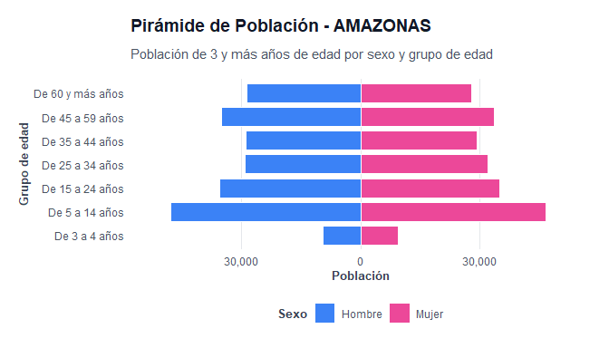

El objetivo de censo2025pe es proporcionar un acceso estructurado, ordenado (tidy data) y documentado a los resultados del Censo Nacional 2025 de Perú (XIII de Población, VIII de Vivienda y IV de Comunidades Indígenas) elaborado por el Instituto Nacional de Estadística e Informática (INEI). El paquete está diseñado bajo la filosofía del tidyverse para facilitar el análisis demográfico y la generación automática de reportes territoriales.
Características Principales
-
Bases de Datos Tidy: 9 datasets cargados de forma diferida (lazy loading) listos para su uso:
-
censo_discapacidad: Población con dificultades físicas o cognitivas. -
censo_educacion: Nivel educativo alcanzado. -
censo_estado_civil: Estado conyugal de la población. -
censo_seguro_salud: Afiliación a seguros públicos (SIS, EsSalud) y privados. -
censo_etnicidad: Autoidentificación étnica. -
censo_vivienda: Tipo de viviendas y su condición de ocupación. -
censo_servicios: Abastecimiento y procedencia de agua. -
censo_hogar_numero: Cantidad de hogares por vivienda. -
censo_hogar_equipamiento: Tenencia de tecnologías y bienes en el hogar.
-
- Validación Geográfica: Funciones robustas para estandarizar nombres de departamentos y provincias (tolerante a acentos y mayúsculas/minúsculas).
- Visualizaciones: Gráficos de alta calidad para pirámides poblacionales, educación, etnicidad y servicios.
- Reportes Paramétricos: Funciones para renderizar automáticamente informes detallados en HTML o PDF y realizar comparativos entre múltiples circunscripciones.
Instalación
Puedes instalar la versión de desarrollo de censo2025pe desde GitHub con:
# install.packages("pak")
pak::pak("PaulESantos/censo2025pe")Ejemplos de Uso
A continuación se muestran algunos ejemplos prácticos de cómo utilizar las herramientas del paquete.
1. Búsqueda y Validación Geográfica
La función buscar_unidad permite verificar y estandarizar nombres geográficos ingresados por el usuario:
library(censo2025pe)
# Buscar departamento
buscar_unidad("amazonas")
#> $matched
#> [1] TRUE
#>
#> $tipo
#> [1] "departamento"
#>
#> $nombre
#> [1] "AMAZONAS"
#>
#> $departamento
#> NULL
# Buscar provincia (se toleran prefijos y minúsculas)
buscar_unidad("prov. chachapoyas")
#> $matched
#> [1] TRUE
#>
#> $tipo
#> [1] "provincia"
#>
#> $nombre
#> [1] "PROVINCIA CHACHAPOYAS"
#>
#> $departamento
#> [1] "AMAZONAS"2. Exploración de Datos
Todos los datasets están en formato largo y limpio:
library(dplyr)
#>
#> Adjuntando el paquete: 'dplyr'
#> The following objects are masked from 'package:stats':
#>
#> filter, lag
#> The following objects are masked from 'package:base':
#>
#> intersect, setdiff, setequal, union
# Obtener población total censada por departamento (excluyendo el total nacional)
censo_educacion %>%
filter(provincia == "Total", area == "Total", sexo == "Total", nivel_educativo == "total") %>%
filter(departamento != "PERÚ") %>%
group_by(departamento) %>%
summarise(poblacion_total = sum(poblacion)) %>%
arrange(desc(poblacion_total)) %>%
head(5)
#> # A tibble: 5 × 2
#> departamento poblacion_total
#> <chr> <dbl>
#> 1 LIMA METROPOLITANA 9352891
#> 2 PIURA 2004611
#> 3 LA LIBERTAD 1917577
#> 4 AREQUIPA 1688010
#> 5 CAJAMARCA 13749573. Visualizaciones Demográficas
Puedes crear gráficos sofisticados de forma directa:
# Graficar pirámide poblacional para el departamento de Amazonas
plot_piramide_poblacion("AMAZONAS")
4. Generación de Reportes Automáticos
Puedes compilar informes ejecutivos en HTML (con estilos premium incorporados) o PDF:
# Generar reporte individual de un departamento
generar_reporte("AMAZONAS", formato = "html")
# Generar reporte comparativo entre dos regiones
comparar_unidades(c("AMAZONAS", "AREQUIPA"), formato = "html")